Agonisti
Allenamenti strutturati sul movimento, schemi, partite e miglioramento della tecnica.
- Tenuti da Marco Del Guasta e Nicola Di Fiore
Centro del Tennistavolo “Giorgio Gradi” · Cascina (PI) · dal 1997
Dal primo palleggio al massimo livello, per bambini e adulti: ti aiutiamo a raggiungere i tuoi obiettivi, dentro e fuori dal campo.
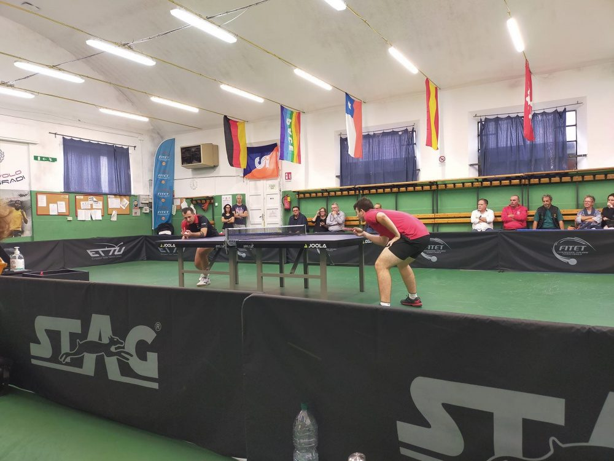
Il circolo
La sezione tennistavolo della Polisportiva Dilettantistica Pulcini Cascina nasce nel 1997 dall’idea di Giorgio Gradi e del figlio Denis: prima in parrocchia, poi al Circolo ACLI della Misericordia, infine nella palestra in via Bruno Genovesi.
Dal 2017, con l’inaugurazione della nuova palestra, sono disponibili 6 aree di gioco permanenti, una zona ristoro e un vivaio che ha portato Cascina sul tetto d’Italia nelle categorie giovanili.
Squadre
Maschile
Femminile
Tocca una serie per vedere le squadre e le rose · stagione 2026/27
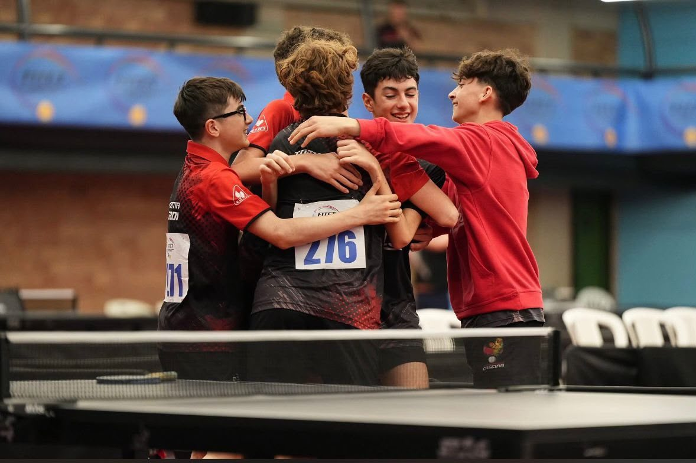
Corsi
Dal primo palleggio alla gara vera: trova il corso giusto per te.
Allenamenti strutturati sul movimento, schemi, partite e miglioramento della tecnica.
Per chi vuole rimettersi in gioco: dal principiante assoluto a chi torna al tavolo dopo anni. Allenamento, partite e tornei sociali.
Tavoli a disposizione per allenarsi liberamente, fare due partite o tirare qualche scambio fuori dagli orari dei corsi.
Il metodo
Muoversi in modo efficace e ripetere il gesto giusto: la qualità del movimento determina la qualità del colpo.
Arrivare sulla palla nel minor tempo possibile, riducendo i movimenti superflui.
Dosare la forza sull’esigenza del colpo, nell’istante esatto in cui avviene.
Lo staff
Presidente
Con il padre Giorgio ha fatto nascere nel 1997 la sezione tennistavolo della Polisportiva.
Direttore sportivo
Tiene insieme squadre, campionati e calendario della palestra.
Allenatore ragazzi agonisti
Segue i gruppi giovanili che ogni anno arrivano alle finali nazionali.
Allenatore ragazzi agonisti
Tecnica, spostamenti e preparazione alle gare del settore giovanile.
Allenatore adulti
Guida gli allenamenti serali del gruppo adulti, dopo cena.
Allenatore
Adulti e amatori del mercoledì mattina e corso ragazzi del pomeriggio.
Allenatore
Al tavolo con il gruppo del giovedì sera e con i ragazzi del venerdì.
Palmarès
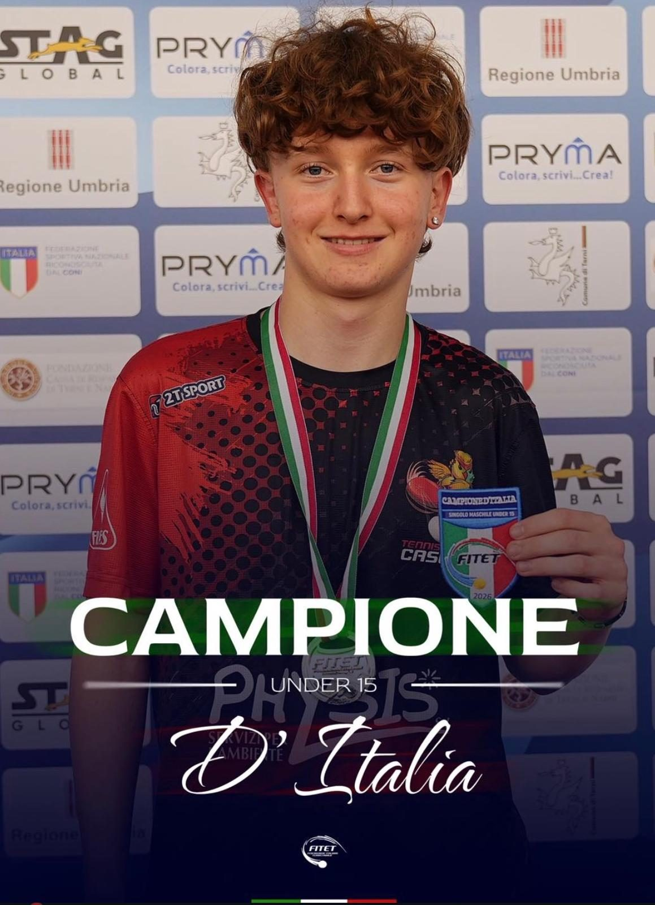
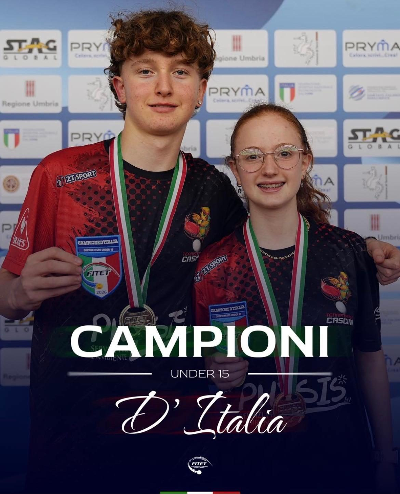
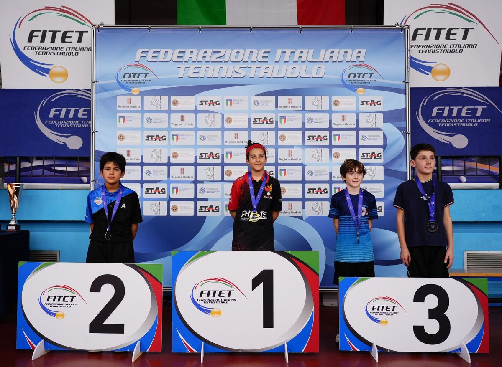
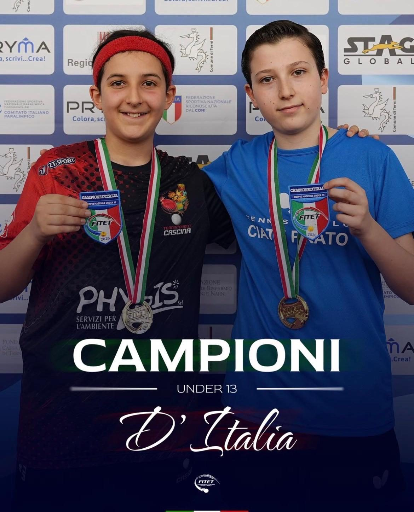
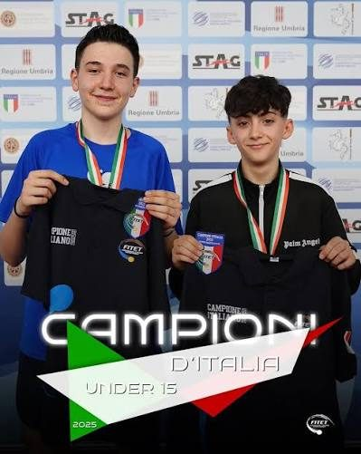
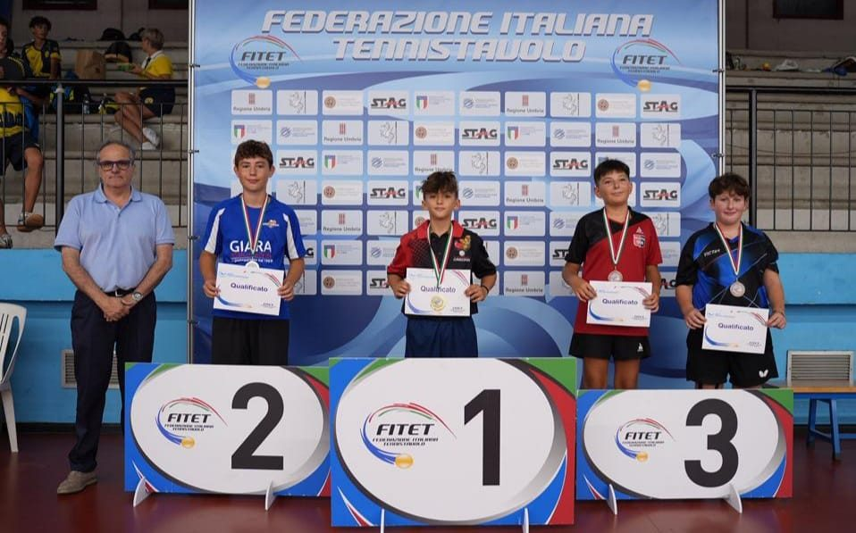
Aggiornamenti
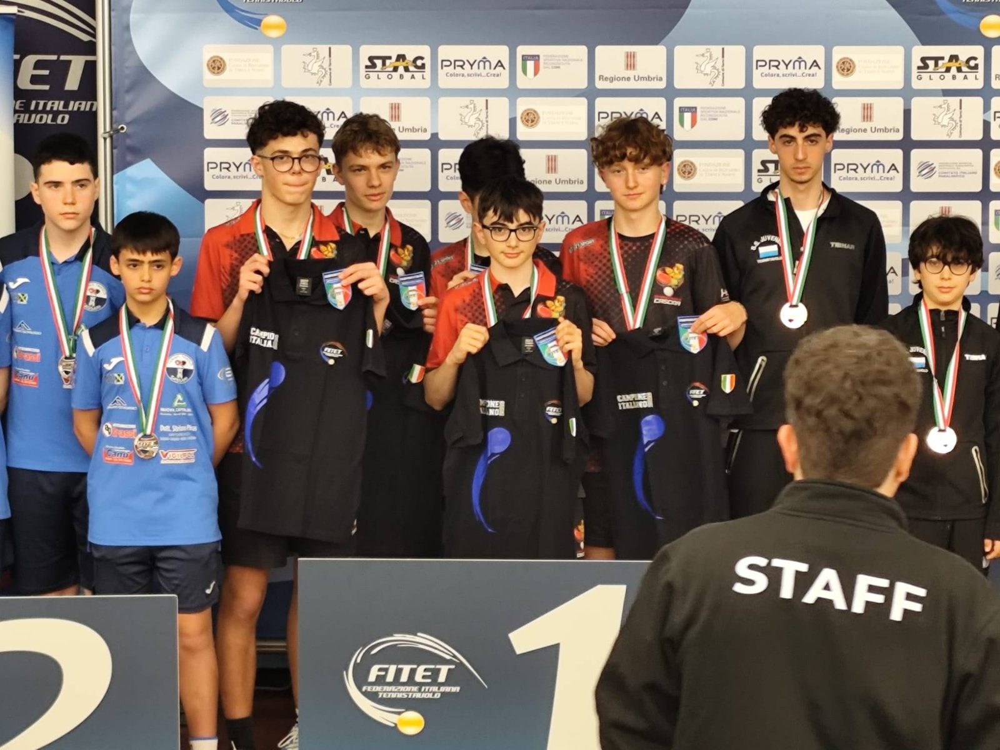
Simi, Paolicchi, Pachetti, Gradi e Raveggi riportano a Cascina il tricolore a squadre dopo una finale decisa all’ultimo singolare.
Leggi su FITeT →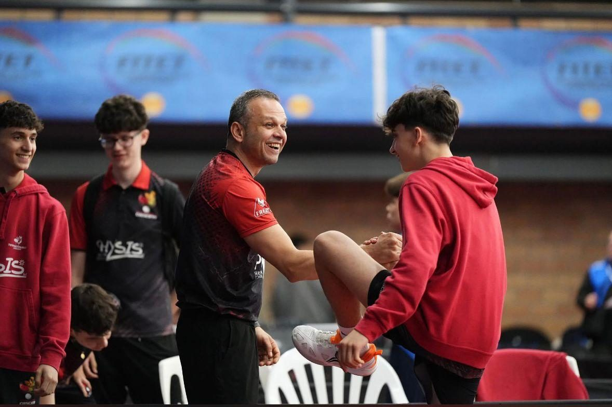
Grulliero, Vaiani e Nita chiudono sul podio nazionale la corsa della squadra Under 17.
Leggi su FITeT →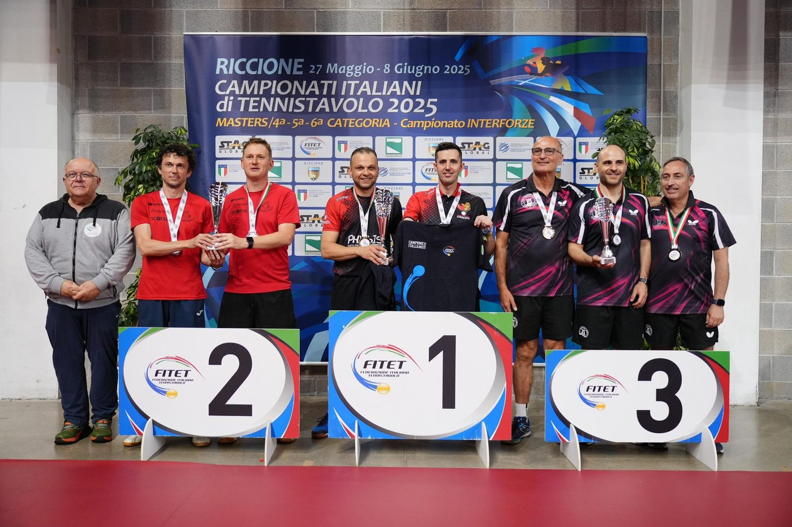
Ruiz Reyes e Nita superano 3-2 il Verzuolo e conquistano il primo titolo Master della storia del circolo.
Leggi su FITeT →Inizia da qui
Se vuoi avvicinarti al tennistavolo o cambiare metodo di allenamento, puoi partecipare gratuitamente a una lezione di prova. Porta scarpe da ginnastica pulite: al resto pensiamo noi.
Preferisci parlarne? 347 150 8098 · cascina-tt@katamail.com
Orari
| Lunedì | 15:30 – 20:00 Corso agonisti — Marco Del Guasta 20:00 – 22:00 Adulti e amatori — Lorenzo Balderi 22:00 – 23:00 Gioco libero |
|---|---|
| Martedì | 14:30 – 16:30 Gioco libero 16:30 – 19:30 Corso — Nicola Di Fiore 19:30 – 23:00 Gioco libero |
| Mercoledì | 10:30 – 12:30 Adulti e amatori — Fabrizio Ciampi 15:00 – 18:00 Corso ragazzi — Ciampi e Del Guasta 18:00 – 19:30 Corso — Marco Del Guasta 19:30 – 21:00 Adulti e amatori — Lorenzo Balderi |
| Giovedì | 14:30 – 16:30 Gioco libero 16:30 – 19:30 Corso — Nicola Di Fiore 19:30 – 21:30 Corso — Matteo Di Ponzio 21:30 – 23:30 Gioco libero |
| Venerdì | 15:00 – 18:00 Corso ragazzi — Di Ponzio e Del Guasta 18:00 – 23:00 Gioco libero |
| Sabato e domenica | Palestra chiusa, salvo tornei |
Dove siamo
Polisportiva Dilettantistica Pulcini Cascina
Via Bruno Genovesi 48 — 56021 Cascina (PI)
347 150 8098
cascina-tt@katamail.com